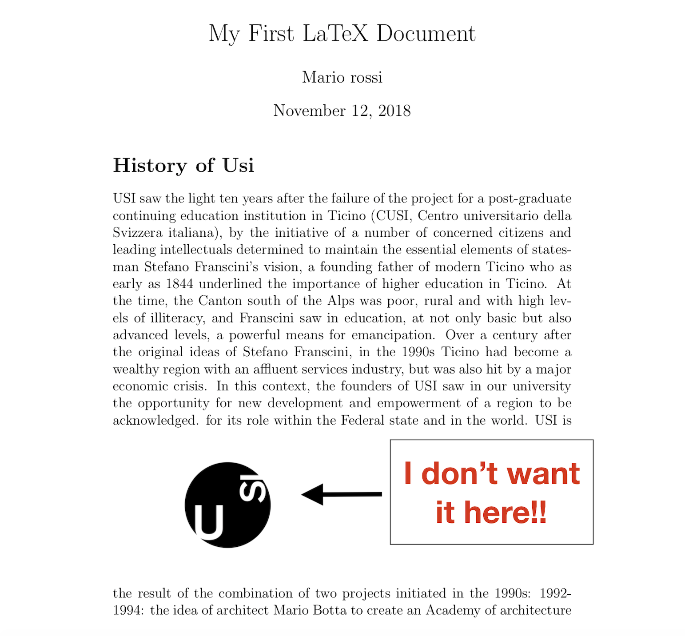

Image positioning
How to place images
When we want to insert images into our documents, we often find ourselves faced with the need to give them
a logical place or even to fix their disposition.
For this we can use environments that act as containers for graphic objects: these are floating inside the page.
LATEX will choose the "optimal" position, unless explicitly indicating the positioning modes.
In fact, Latex could put images on the next page or where there is enough space.
This happens because you may have a lot of text in the document.
To avoid this behavior it is necessary to set the float of the figure in its environment as we will see later.

Figure environment
Usually the \includegraphics command is used within the {figure} environment
to create a figure, which will be a moving object within the document that LATEX will position in order
to make the layout more pleasant.
CODE
\begin{figure}[htbp]
\includegraphics[height=5cm]{USI.jpg}
\caption{Prima immagine: USI builfing}
\label{fig1}
\end{figure}
How to set the float
To place the image in the right position it is necessary to set the float value for the figure environment.
To do this you need to set the float by adding [h!] after the command "\begin{figure}".
In brackets it is possible to put a preference for the final position of the object on the page.
The argument is a string consisting of the initial h, t, b, p.
If not specified, LATEX prover`a to place the object in this order: top, bottom, page.
The possible values are:
- h (here) - same position
- t (up) - top of the page
- b (down) - at the bottom of the page
- p (page) - on an additional page
- ! (substitute): force the specified position
CODE
\begin{figure}[t]
\includegraphics[height=6cm, width=5cm]{USI.LOGO.jpg}
\end{figure}
Multiple figures
Using the package/subfigure
it is possible to combine or overlap several subfigures in the same figure, below the basic code:
CODE
\begin{figure}
\subfigure[caption]
{\includegraphics[width = 4in]{a}}\\
\subfigure[caption]
{\includegraphics[width = 4in]{b}}
\end{figure}
Commands [position] and [options] are used in the same way as the traditional
environment \begin {figure}, as well as \label and \caption of the
last three lines, in the same way the \label inside the commands \subfigure defines the label of the only subfigures
and the optional caption in square brackets just after the \subfigure command defines their caption.